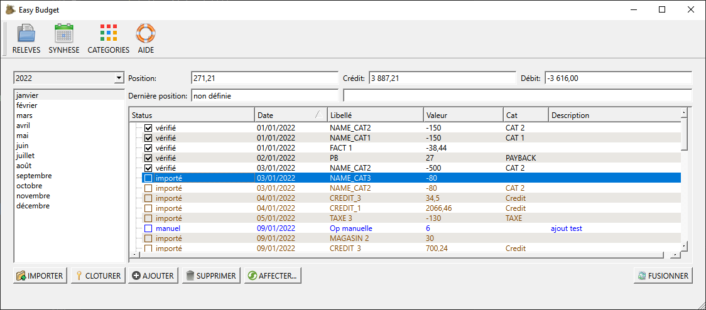

Vue Relevés

Sélection d'un relevé
La section de droite permet de choisir le relevé à afficher :
- Sélectionner l'année
- cliquer sur le mois
Les relevés de l'année courante sont automatiquement créés.
Les relevés d'une autre année sont ajoutés dès qu'une opération de cette année est créée.
Affichage des opérations
| Colonne | Description |
|---|---|
| Status |
|
| Date | date de l'opération |
| Libellé | titre de l'opération |
| Valeur | valeur de l'opération.
|
| Cat. | Catégorie de l'opération
La catégorie peut être sélectionnée en cliquant sur la cellule : une liste déroulante des catégories est alors accessible. |
| Commentaire | texte libre pouvant être ajouté à l'opération |
Position du compte
Au dessus du tableau des opérations, sont affichées les informations de position
| Zone | Description |
|---|---|
| Crédit | Total des entrées durant le mois |
| Débit | Total des dépenses durant le mois |
| Position | position du compte = (crébit – débit) + position du mois précédent |
| Dernière position | dernière position connue indiquée par la banque
le champ à droite indique la différence entre la position et la dernière position connue. |
Fonctions accessibles
En bas de la vue sont situées les boutons qui permettent de gérer les relevés :
| Bouton | Description |
|---|---|
| IMPORTER | Permet de sélectionner un fichier contenant les opérations |
| CLOTURER | Ferme l'année comptable : ceci permet de figer les regroupement par catégorie.
Il n'est alors plus possible de modifier les relevés de l'année cloturée. |
| AJOUTER | Crée une nouvelle opération |
| SUPPRIMER | Supprime l'opération sélectionnée dans le tableau |
| AFFECTER... | Mets à jour l'association automatique entre les opérations et les catégories. |
| FUSIONNER | Compare les opérations importées de la banque avec les opérations saisies, non encore vérifiées |
© 2022 Michel Janton
The documentation provided herein is licensed under the terms of the GNU Free Documentation License version 1.3 as published by the Free Software Foundation.